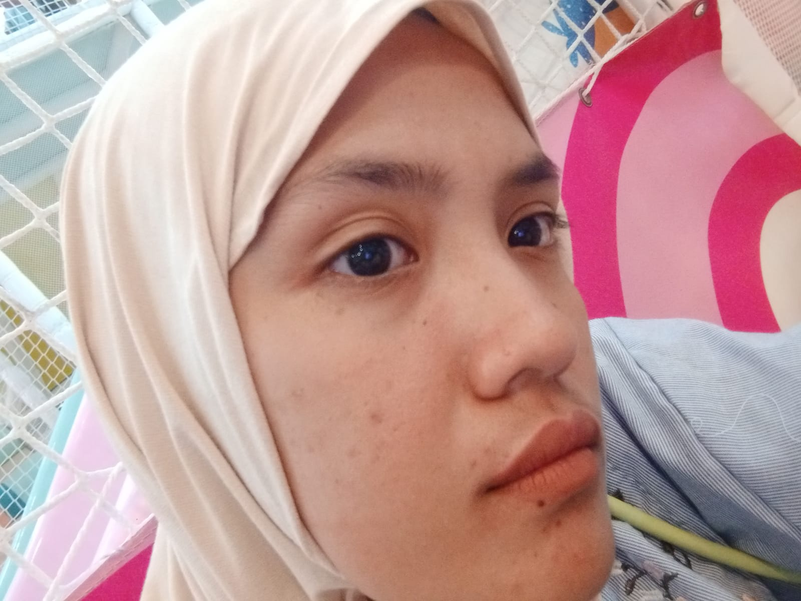

Hai Cantik
Terima kasih ya udah ada untuk aku.
coba slide ke atas.

Terima kasih ya udah ada untuk aku.
coba slide ke atas.
Di sela-sela kesibukanku dan rencana masa depanku, dia adalah alasan utamaku untuk terus berusaha. Dia bukan sekadar pacar, dia adalah napas dalam langkahku. Melihatnya di foto ini, hatiku merasa hangat—karena aku tahu, aku punya seseorang yang benar-benar memahami dan menerimaku apa adanya dengan sepenuh hatinya.
Jarak mungkin membuat kita tidak bisa saling menyentuh, tapi tidak akan pernah bisa memutus rasa sayang yang sudah terlanjur tumbuh. Terima kasih sudah menjadi bagian terindah dari setiap langkahku, ke mana pun aku pergi, kamu adalah wanita cantik yang pernah aku temui.
Aku berharap kita bisa terus melangkah bersama melewati hari-hari yang indah hingga kelak kita dapat ketemu di masa depan.
!! TRIMA KASIH SAYANG KU TELEH MENEMANI AKU.!!